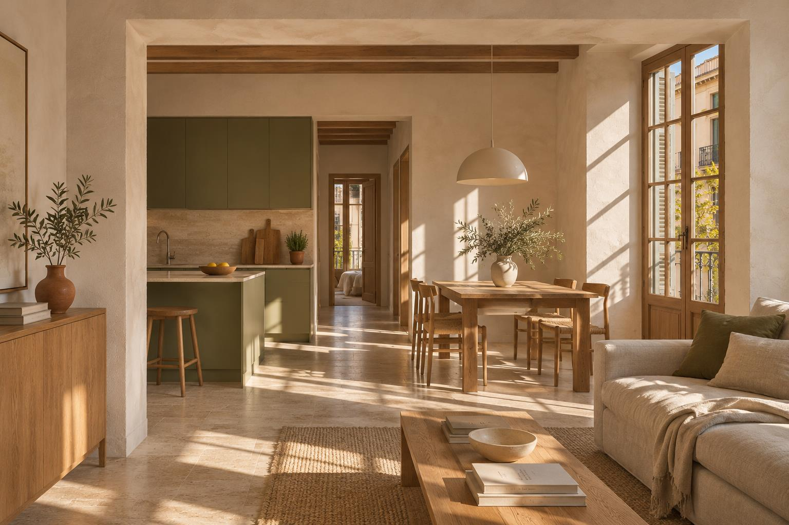

Del enlace a tu lista.
Guarda materiales, precios, cantidades y favoritos. Organízalos por categoría, estancia y estado.
Explorar materialesDe la primera idea a la última llave
La casa que imaginas empieza por tenerlo todo claro. Presupuestos, decisiones y próximos pasos, juntos en NIVEL.

Reformar ya tiene suficiente lío
Ese presupuesto en el correo. La medida en una nota. El pago que no recuerdas. NIVEL reúne las piezas para que tú veas el conjunto.
Así se ve tenerlo claro
Explora las pantallas de NIVEL.
Capturas reales, con datos de ejemplo.
Lo que necesita atención, las cifras de tu reforma y las decisiones pendientes. Una visión general antes de entrar al detalle.
El dinero, con nombre y apellidos
Del presupuesto al último pago. Entiende cuánto llevas, qué queda pendiente y quién se encarga de cada gasto.
Consulta los presupuestos aceptados y los gastos registrados sin perder la perspectiva del proyecto.
Divide un gasto en anticipo, pagos durante la obra y liquidación. Guarda importes, vencimientos y pagos realizados.
Conserva el documento y vincúlalo a su gasto. Puedes ayudarte del análisis con IA y revisar los datos antes de registrarlos.
Del «creo que ya lo pagué» al «aquí está».
Antes de mover una pared
Dibuja la distribución, ajusta medidas y explora el espacio en 3D. Cambiar de idea sobre el plano es parte del proceso.
Piensa en metros.Paredes, puertas y ventanas con medidas.
Míralo en volumen.Una vista 3D orientativa de tu distribución.
Conserva cada opción.Guarda tus planos y vuelve a ellos.
También están los pequeños grandes detalles
Una reforma son números. Y también acabados, personas, fechas y ese detalle que no quieres olvidar.
Guarda materiales, precios, cantidades y favoritos. Organízalos por categoría, estancia y estado.
Explorar materialesReúne a los profesionales de la reforma y comparte el proyecto con quienes lo viven contigo.
Tareas, calendario y próximos pasos para saber qué toca sin tener que reconstruir la conversación.
Junta inspiración, notas y fotos del progreso. Las ideas y la evolución de la obra tienen su lugar.
De «por dónde empiezo» a «lo tengo»
Crea tu proyecto y guarda la información de la vivienda, las ideas y los primeros planos.
Ordena materiales y presupuestos. Ten los documentos a mano cuando llegue el momento de elegir.
Registra gastos, completa tareas y guarda fotos. Vuelve al resumen para ver dónde estás.
Antes de empezar
También fuera de la obra.
La información de tu vivienda, planos, materiales, presupuestos, facturas, gastos, proveedores, tareas, calendario, notas, inspiración y fotos del progreso. Todo dentro de un mismo proyecto.
Sí. NIVEL permite compartir proyectos mediante invitaciones y asignar permisos para consultar o editar la información.
Sí. La app se adapta al móvil y puede instalarse como una aplicación web. Necesitas conexión para sincronizar y utilizar las funciones que dependen del servidor.
Te ayuda a extraer los datos de presupuestos y facturas. Tú revisas y corriges la información antes de guardarla. Es opcional y está sujeto a los límites de uso de la app.
El editor sirve para explorar distribuciones y visualizar ideas. Las medidas y la vista 3D son orientativas; consulta a un profesional para los planos y decisiones técnicas de la obra.
Sí. Las pantallas son capturas reales de NIVEL con datos de demostración. La fotografía del interior es una imagen conceptual creada para esta presentación.